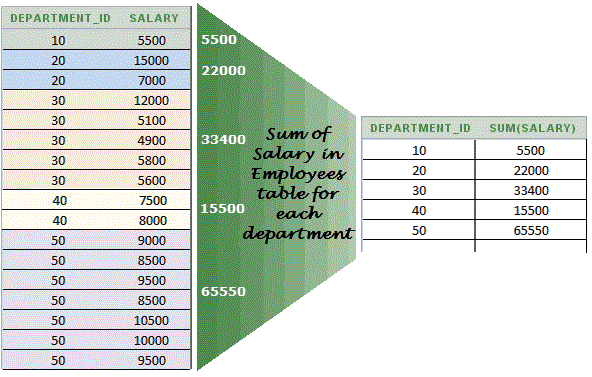
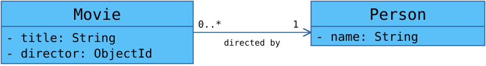
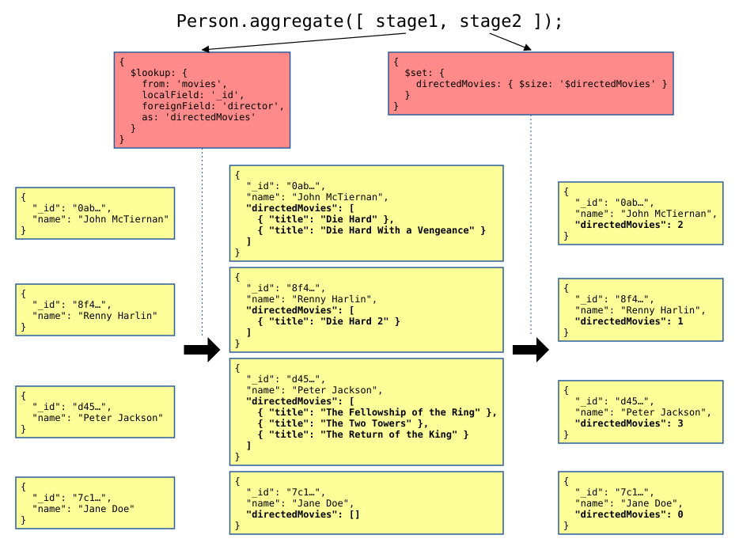

# Using Mongoose with Express Learn how to implement advanced RESTful API operations in [Express][express] with [Mongoose][mongoose] (a [MongoDB][mongodb] Object-Document Mapper). **You will need** - A running [MongoDB][mongodb] database - A running [Express][express] application with [Mongoose][mongoose] plugged in **Recommended reading** - [REST introduction & HTTP](../rest/) - [REST in depth](../rest-advanced/) - [Express](../express/) - [Mongoose](../mongoose/) --- ## Demonstration RESTful API .breadcrumbs[<a href="#1">Using Mongoose with Express</a>] The examples in this tutorial are taken from a RESTful API developed to demonstrate how to implement REST concepts. You will find the [source code][demo] of this API on GitHub, and its [documentation][demo-doc] online (follow the instructions in the documentation to try it). You should read about the [resources][demo-res] that you can manipulate with this API before moving on. --- class: center, middle ## Relationships .breadcrumbs[<a href="#1">Using Mongoose with Express</a>] <p class='center'></p> How do I link stuff together? --- ### Mongoose references .breadcrumbs[<a href="#1">Using Mongoose with Express</a> > <a href="#3">Relationships</a>] MongoDB has no foreign keys, but you can still link documents together by storing references to other documents. These references could be of any type and to any field, but they are often a reference to the MongoDB ID of the target document. You can tell Mongoose that a property is a [**reference**][mongoose-reference] to another model by setting its `type` to `Schema.Types.ObjectId` (indicating that it is a MongoDB document ID), and setting its **`ref`** to the name of the target model: ```js /** * A movie directed by a person. */ const movieSchema = new Schema({ // ... director: { * type: Schema.Types.ObjectId, * ref: 'Person' } }); ``` --- ### Mongoose population .breadcrumbs[<a href="#1">Using Mongoose with Express</a> > <a href="#3">Relationships</a>] Let's assume you have a movie document. Its `director` property is a MongoDB ID which references another document: ```js const movie = await Movie.findOne({ title: 'Casino Royale' }).exec(); console.log(movie.director); // ObjectId('5f7a3e74576b3d75acea6c7d') ``` When calling [`populate`][mongoose-population], the reference is replaced by the target document itself, loaded using the model defined with the `ref` property in the schema: ```js const movie = await Movie .findOne({ title: 'Casino Royale' }) * .populate('director') .exec() console.log(movie.director.name); // "Martin Campbell" ``` --- class: center, middle ## Filtering .breadcrumbs[<a href="#1">Using Mongoose with Express</a>] <p class='center'></p> How do I get only the right stuff? --- ### Limiting collections .breadcrumbs[<a href="#1">Using Mongoose with Express</a> > <a href="#6">Filtering</a>] Often when clients make requests on a RESTful API's **collection** resource, they don't need the whole thing; they need **only the items they are interested in** for the current view. For example, you might want to display: - The list of movies directed by someone - The list of movies with a rating greater than or equal to 8 - The list of movies directed by either of your two favorite directors --- ### Simple filters .breadcrumbs[<a href="#1">Using Mongoose with Express</a> > <a href="#6">Filtering</a>] Express gives you access to **URL query parameters** in `req.query`, and Mongoose offers a chainable **query builder**; they're very easy to plug together: ```js // GET /api/movies router.get('/', async function(req, res, next) { // Create a query, do not execute it yet let `query` = Movie.find(); // Filter movies by director if (mongoose.isValidObjectId(req.query.director)) { `query = query.where('director').equals(req.query.director)`; } // Limit movies to only those with a good enough rating if (!isNaN(parseFloat(req.query.ratedAtLeast))) { `query = query.where('rating').gte(req.query.ratedAtLeast)`; } // Execute the query const movies = await `query.exec()`; res.send(movies); }); ``` --- ### Dynamic filters .breadcrumbs[<a href="#1">Using Mongoose with Express</a> > <a href="#6">Filtering</a>] What about our director filter? Can we make it work for **multiple directors** as well? Yes we can: ```js // GET /api/movies router.get('/', async function(req, res, next) { let `query` = Movie.find(); // Filter movies by director if (`Array.isArray(req.query.director)`) { // Find all movies directed by any of the specified directors const directors = req.query.director.filter(mongoose.isValidObjectId); `query = query.where('director').in(directors)`; } else if (mongoose.isValidObjectId(req.query.director)) { // Find all movies directed by a specific person `query = query.where('director').equals(req.query.director)`; } // ... }); ``` Repeat the parameter to send several values: `?director=abc&director=def`. Express 5 does not parse `?director[]=abc&director[]=def` (the default format of some HTTP clients) into an array. --- class: center, middle ## Pagination .breadcrumbs[<a href="#1">Using Mongoose with Express</a>] <p class='center'></p> How do I get a reasonable amount of stuff? --- ### Paginating collections .breadcrumbs[<a href="#1">Using Mongoose with Express</a> > <a href="#10">Pagination</a>] Some collections are just **too large to send** to the client in their entirety. The following examples implement pagination with page and page size query parameters, and a **JSON envelope** in the response: ```http GET /api/movies?page=2&pageSize=50 HTTP/1.1 ``` ```json { "page": 2, "pageSize": 50, "total": 231, "data": [ ... ] } ``` They assume that you have read [REST in Depth](../rest-advanced/), which explains this and other ways to expose pagination in a REST API. --- ### Reading the page parameters .breadcrumbs[<a href="#1">Using Mongoose with Express</a> > <a href="#10">Pagination</a>] ```js // GET /api/movies?page=2&pageSize=50 const page = Math.max(1, parseInt(req.query.page, 10) || 1); const pageSize = Math.min( 100, Math.max(1, parseInt(req.query.pageSize, 10) || 20) ); ``` - Query parameters are **strings**, and may be missing or invalid: always fall back to a default - **Cap the page size**, or a client can ask for everything at once - `limit(0)` means **no limit** in MongoDB: never let `0` through --- ### Paginating a query .breadcrumbs[<a href="#1">Using Mongoose with Express</a> > <a href="#10">Pagination</a>] ```js router.get('/', async function (req, res) { // ...page and pageSize as on the previous slide const query = Movie.find(); // with the filters from earlier const [total, movies] = await Promise.all([ `query.clone().countDocuments()`, query`.sort({ title: 1 })``.skip((page - 1) * pageSize)``.limit(pageSize)`.exec() ]); res.send({ page, pageSize, total, data: movies }); }); ``` - Count with the **same filters** as the page (`clone()` copies them) - **Sort**, or the same movie could show up on two pages --- class: center, middle ## Aggregation .breadcrumbs[<a href="#1">Using Mongoose with Express</a>] <p class='center'><p></p></p> --- ### Aggregation example .breadcrumbs[<a href="#1">Using Mongoose with Express</a> > <a href="#14">Aggregation</a>] Let's say that when we retrieve **People** from the API, we also want to know **how many movies they have directed**. In SQL, assuming People and Movies are in **different tables**, you would use a **JOIN** and a **GROUP BY** to get that information: ```sql SELECT people.*, COUNT(movies.id) AS directed_movies_count FROM `people LEFT JOIN movies` ON (people.id = movies.director_id) `GROUP BY people.id`; ``` --- #### MongoDB aggregations .breadcrumbs[<a href="#1">Using Mongoose with Express</a> > <a href="#14">Aggregation</a> > <a href="#15">Aggregation example</a>] If your related documents are stored in two **separate collections** (as is the case for People and Movies in the demonstration RESTful API), you have to **aggregate** information from both collections. <p class='center'><p></p></p> MongoDB's equivalent of a `JOIN` is the [`$lookup` operator][mongodb-lookup]. To use it, you have to use [MongoDB aggregations][mongodb-aggregation]. --- ### Aggregation pipeline .breadcrumbs[<a href="#1">Using Mongoose with Express</a> > <a href="#14">Aggregation</a>] The preferred MongoDB aggregation method is the [aggregation pipeline][mongodb-aggregation-pipeline]: documents go through a multi-stage pipeline where **each stage transforms the collection of documents** into **aggregated results**. Mongoose models have an `aggregate()` function you can call with an **array of stages** to apply: ```js Movie.`aggregate`([ stage1, stage2, stage3 ]); ``` Each **stage** is an object with an [aggregation pipeline operator][mongodb-aggregation-pipeline-operators]: ```js { `$match`: { director: { $in: [ 'abc', 'def', 'ghi' ] } } } ``` --- #### Aggregation pipeline example (part 1/2) .breadcrumbs[<a href="#1">Using Mongoose with Express</a> > <a href="#14">Aggregation</a> > <a href="#17">Aggregation pipeline</a>] Let's say you have retrieved a list of Person documents from the database, and you want to know how many Movies they have directed. The [`$lookup` operator][mongodb-lookup] retrieves each Person's directed Movies through the `director` property: ```js { $lookup: { from: 'movies', localField: '_id', foreignField: 'director', as: 'directedMovies' } } ``` Applying this operator adds the new `directedMovies` property to each Person: .grid-50[ ```js { name: 'Peter Jackson'; } ``` ] .grid-50[ ```js { name: 'Peter Jackson', `directedMovies`: [ { title: 'a' }, { title: 'b' } ] } ``` ] --- #### Aggregation pipeline example (part 2/2) .breadcrumbs[<a href="#1">Using Mongoose with Express</a> > <a href="#14">Aggregation</a> > <a href="#17">Aggregation pipeline</a>] You only need the **number** of directed movies, not the movies themselves. The [`$set` operator][mongodb-set] replaces the `directedMovies` array by its [`$size`][mongodb-size]: ```js { $set: { directedMovies: { $size: '$directedMovies'; } } } ``` .grid-50[ ```js { name: 'Peter Jackson', directedMovies: [ { title: 'a' }, { title: 'b' } ] } ``` ] .grid-50[ ```js { name: 'Peter Jackson', * directedMovies: 2 } ``` ] .container[ People who have not directed any movie get an empty array from `$lookup`, so their count is `0`. ] --- #### How does it work? .breadcrumbs[<a href="#1">Using Mongoose with Express</a> > <a href="#14">Aggregation</a> > <a href="#17">Aggregation pipeline</a>] <p class='center'><p></p></p> --- ### Using the aggregation pipeline with Mongoose .breadcrumbs[<a href="#1">Using Mongoose with Express</a> > <a href="#14">Aggregation</a>] You can use MongoDB aggregations with Mongoose quite easily by simply calling the [`aggregate` method][mongoose-aggregate] on models: ```js import Person from '../models/person.js'; const results = await Person.aggregate([{ stage1...}, { stage2... }]); ``` Note that the `results` array returned by Mongoose contains **plain objects, NOT Mongoose documents**. This is because a pipeline can easily transform documents so that they no longer match the original schema. If necessary, you can transform them back into Mongoose documents yourself by using your model: ```js // Create documents from aggregated results. const aggregatedDocuments = results.map(result => Person.hydrate(result)); ``` --- ### Aggregation pipeline operators .breadcrumbs[<a href="#1">Using Mongoose with Express</a> > <a href="#14">Aggregation</a>] There are many operators you can use in pipeline aggregation stages. They are all described in [the documentation][mongodb-aggregation-pipeline-operators]. Here are some of the most useful: | Operator | Description | | :--------- | :--------------------------------------------------------------------------------------------------------------------------- | | `$group` | Groups documents by a specified identifier expression and applies the accumulator expression(s), if specified, to each group | | `$limit` | Passes the first _n_ documents unmodified to the pipeline | | `$lookup` | Adds the matching documents from **another collection** (like a `JOIN`) | | `$match` | **Filters** documents to allow only matching documents to pass unmodified into the next pipeline stage | | `$project` | Reshapes each document, such as by adding new fields or removing existing fields | | `$set` | Adds new fields to each document, or replaces existing ones | | `$skip` | Skips the first _n_ documents (e.g. for **pagination**) | | `$sort` | Reorders the documents by a specified sort key (e.g. for **pagination**) | --- ## Resources .breadcrumbs[<a href="#1">Using Mongoose with Express</a>] **Documentation** - [Mongoose `populate`][mongoose-populate] - [MongoDB aggregation][mongodb-aggregation] [demo]: https://github.com/MediaComem/comem-rest-demo [demo-doc]: https://demo.archioweb.ch [demo-res]: https://github.com/MediaComem/comem-rest-demo#api-resources [express]: https://expressjs.com [mongodb]: https://www.mongodb.com [mongodb-aggregation]: https://www.mongodb.com/docs/manual/aggregation/ [mongodb-aggregation-pipeline]: https://www.mongodb.com/docs/manual/core/aggregation-pipeline/ [mongodb-aggregation-pipeline-operators]: https://www.mongodb.com/docs/manual/reference/mql/aggregation-stages/ [mongodb-lookup]: https://www.mongodb.com/docs/manual/reference/operator/aggregation/lookup/ [mongodb-set]: https://www.mongodb.com/docs/manual/reference/operator/aggregation/set/ [mongodb-size]: https://www.mongodb.com/docs/manual/reference/operator/aggregation/size/ [mongoose]: https://mongoosejs.com [mongoose-aggregate]: https://mongoosejs.com/docs/api/aggregate.html [mongoose-populate]: https://mongoosejs.com/docs/populate.html [mongoose-population]: https://mongoosejs.com/docs/populate.html#population [mongoose-reference]: https://mongoosejs.com/docs/populate.html#saving-refs